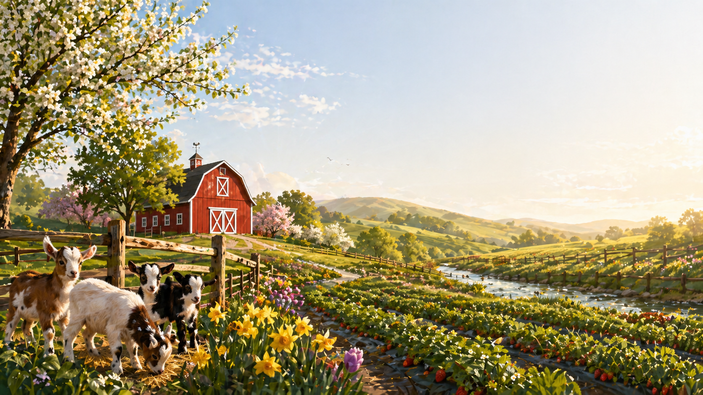

Spring brings fresh blooms, baby animals, and the start of U-Pick season. Families can enjoy strawberry picking, sunflower fields, and visits with chicks, ducklings, and baby goats.
Walk through sunflower fields and create a bouquet.
Fresh strawberry picking every spring weekend.
Meet baby goats, ducklings, and chicks in the barn.
Look at plants and seedlings for your home garden.